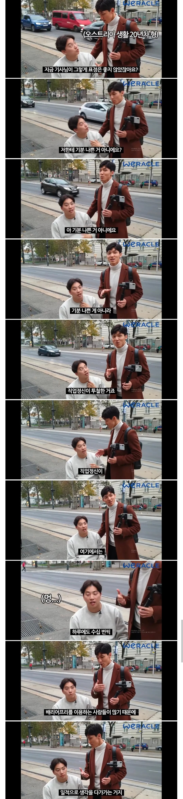

진상인 젊은 남자애들은 왜 하나같이 안드로겐 딸려보이는 애들일까?
여자처럼 지랄맞아서 그런가봐
그니까 혼인신고하러가서 왜 축하한다는 한마디도 안해주냐고 민원넣는거랑 똑같은거잖아 ㅋㅋ
왜 저거 찍을때마다 사람들이 선뜻 안도와주고 어리둥절한 표정인지 알음?
분명 성인남성 2명이 동행처럼 따라다녀서 도우미인가 싶은데
카메라만 쳐찍고있어서 도와줘야 되나 말아야되나 혼란와서그럼 ㅋㅋ
본인도 남한테 안 웃어주고 다니는데, 왜 본인한테 시간과 힘을 들여서 무상으로 도와주는 사람들이 본인한테 웃어줘야하지?
??: 너 새끼 표정이 왜 그 모양이야
빌빌꼬여가지고 에휴 인성
뭔 씨발 덩실덩실 춤이라도 추면서 발판 내려줘야되나 ㅋㅋㅋㅋㅋㅋㅋ
몸이 아니라 마음이 아픈 친구였구나.
하느님 믿으면 뭐하냐, 자격지심이란 놈을 치료할수 있는건 하느님이 아니라 너 자신 뿐이다.
다른 장애인은 다 웃으며 도와주다가도 "나 도와주세요~"하면서 뒤에 카메라 찍고있는거 보이면 팍 식을꺼 같긴 해.
자기도 카메라 돌고 있을 때는 기사한테 인사하잖아.
외국인한텐 감사합니다 말하네
근데 기분 좀 나쁘면 안 되나?